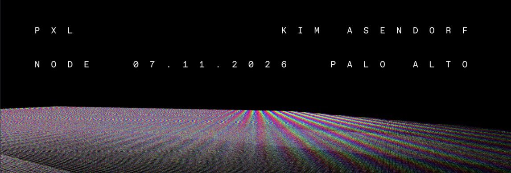
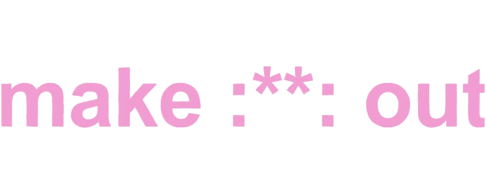

Supporting visitor experience and exhibition operations at a gallery for digital and on-chain art.
Client
Node Foundation
Role
Guest Experience Associate
Timeline
Jun 2026 – Present
Focus
Visitor Engagement
Project Overview
Node Foundation is a gallery dedicated to digital and on-chain art. As a Guest Experience Associate, I help visitors, many encountering this kind of art for the first time, actually understand and connect with what they're looking at.
01Guest Experience
Role at a Glance
01Serve as the primary point of contact for guests navigating new exhibitions.
02Explain artworks and help visitors engage with digital and on-chain art, often a genuinely new format for them.
03Support day-to-day gallery operations, including setup, guest assistance, and front desk coverage.
02Exhibition Support
Beyond hosting, I supported the installation process for two exhibitions during my time at Node.

Exhibition 01
PXL — Kim Assendorf
Helped with installation setup and was on the floor to guide guests through the piece once it opened to the public.

Exhibition 02
Make Out — Maya Man & Luke Shannon
Supported installation logistics and served as a guide for visitors experiencing the piece for the first time.
03Marketing Support
Exhibit Promotion
Assisted the team with marketing efforts around each exhibition opening.
On-the-Ground Content
Helped capture moments from the gallery floor to support Node's social presence.
Guest Feedback Loop
Passed along recurring visitor questions and reactions back to the team.
04Takeaways
Translating New Art Forms
A lot of guests walk in without much context for digital or on-chain art. Learning how to explain it clearly, without over-explaining, pulled directly from the same instincts I use as a Peer Advisor and TA: meeting someone where they are.
Seeing the Full Exhibition Lifecycle
Being on the install side and the guest-facing side of the same exhibitions gave me a much better sense of everything that happens between an artist's concept and a visitor's first reaction to it.
Designing for Learning & Connection
Guest experience turned out to be spatial design as much as it was hosting. How a room is laid out (sightlines, lighting, where I stood relative to a piece) shaped whether someone felt comfortable getting curious or just walked past.
Making It Enjoyable, Not Just Educational
Digital and on-chain art can feel intimidating on paper. Part of the job was translating that seriousness into something people could actually enjoy: pacing conversations and keeping explanations light so a visit felt digestible, not like a lecture.